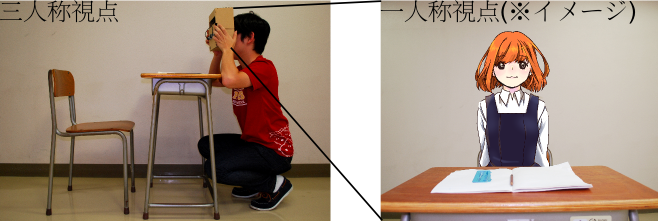
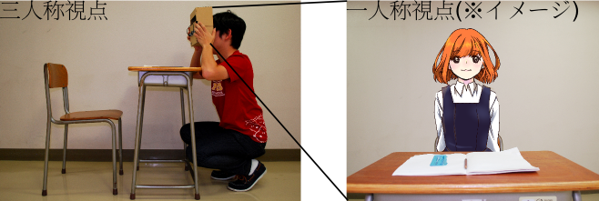

一見何もないように見えますが、ARボックスを覗いているプレイヤーには架空の女の子「空ちゃん」が見えています。
ARボックスの中にはディスプレイが入っていて3Dの映像をプレイヤーに表示しています。 現実の映像をカメラで撮影し3Dの女の子を合成することで、 あたかも女の子が目の前にいるかのように見せることができます！
AR技術を使うと現実に存在しないものを存在するかのように見せることができます。
この展示ではAR技術によって空ちゃんという女の子と、コミュニケーションを取ることができます。
空ちゃんとの会話を通して、あったかもしれない高校生活を疑似体験しましょう。
一見何もないように見えますが、ARボックスを覗いているプレイヤーには架空の女の子「空ちゃん」が見えています。
ARボックスの中にはディスプレイが入っていて3Dの映像をプレイヤーに表示しています。 現実の映像をカメラで撮影し3Dの女の子を合成することで、 あたかも女の子が目の前にいるかのように見せることができます！
『AiR彼女』
かつて高校生だった
すべての人々
５分〜１０分
ありふれた共学の高校
なんでもない日の放課後
「あの時ああしてればっ！」
後悔なしの人生を歩んできた人などいない。 「バナナをスーパーで買った帰りに通りかかった八百屋で見たらこっちの方が二割安かった。クソッ」などという小さなものから、 「レポートの締め切りを一週間勘違いして提出できずに単位を落としちまった（涙目）」などというもうちょっと大きなものもあるだろう。 思い出すと必ずうめいて、うずくまりたくなるような後悔も誰にだって一つくらいあるはずだ。
後悔は別のもっといい選択肢を選べたという可能性を思い出すことによって生じる。 後悔したときに出てくるセリフである「あの時ああしてればっ！」の「ればっ！」の後ろには「～になったのに」というのがくっついて、 このセリフを言っている人は選んでしまった選択肢を思い出し、別の選択肢に思いを馳せている。
そんな後悔の「もっといい選択肢」を体験させる装置があったら面白いと思った。 実はそれは小説や映画、演劇によって一応実現されている （読者あるいは観客は作中の人物の追体験をするのだから、 この追体験が「いい選択肢」と合致するならばこれは言っている装置の実現だろう）。 だが、この追体験をもっと臨場感があってインタラクティブなものにできないだろうか。 こちらの体の動きに合わせて周りの状況が変わったり、喋りかけることが出来たり。ついでに立体視とか出来たらいいなぁ…
「AR（拡張現実）技術だ。」
ARは現実空間を拡張して、現実には存在しないものがさも存在するかのような体験をもたらしてくれる。これを使って過去のある場面をリプレイするようなコンテンツは面白そうだ。
別に新しいことを言っている訳ではない。ARなんて２０年以上前からあるし、スマートフォンでみんなが使うようなARコンテンツが出てきているし。
でも、世の中にあるARコンテンツって大体が現在ないし未来に目が向いてるように思う。コンテンツが「AR技術でこんなに新しい、面白い新しい世界が切り開けるんですよ」ってプレイヤーに問いかけているように感じる。何だかキラキラした感じ。
そうではなくて、過去のリプレイをするようなコンテンツを作ってみたい。過去に目を向けるのだ。そしてリプレイするのは「もっといい選択肢」を選択したら起きていたであろうことだ。
そんなことを考えつつも、結局は製作者も含めてキャラクターに萌えちゃったりするだけなんだろうなぁ。そう分かりつつも私達アンチ二次元同盟（仮）が送り出す、来場者が少しだけ傷ついて、少しだけ幸福になるかもしれない、そういう拡張現実の企画。
東工大を拠点とした技術系クリエーター集団です。
二次元を忌み嫌う人たちの集団だと思われる方もいらっしゃるようですが、そうではありません（政治団体でもないです）。 むしろ私たちは二次元に対して敬意を持っているくらいです。 「アンチ二次元同盟（仮）」という名前の意味は、私達の製作するコンテンツが三次元ARであり、 二次元コンテンツではないというくらいです。
私達の集団は2013年の「リレー式計算機展」のメンバーを中心に、現在１０名で構成されています。 技術面だけでなくコンテンツとして面白い、お祭り感のあるものを世に送り出すことを目的としています。 キャッチコピーは「技術で一緒にはしゃごっ」。
とりあえずこのところは３次元ARを使ったコミュニケーションゲーム『AiR彼女』の製作を中心に活動してます。

{kind=link}
{kind=link}